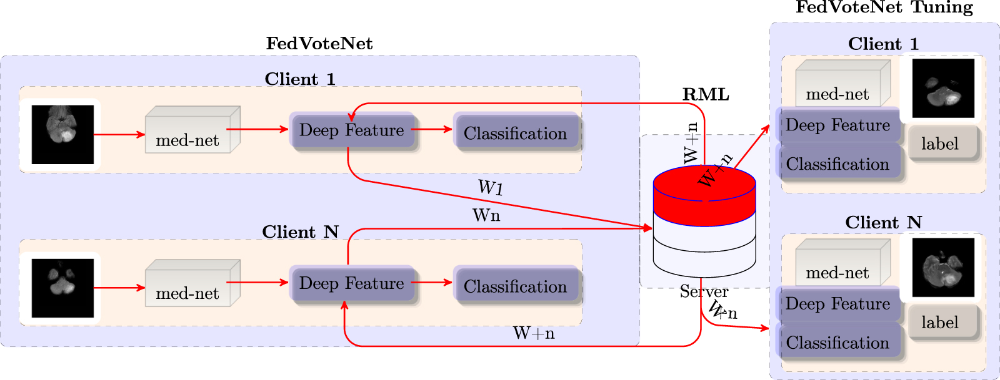

Dynamic selectout and voting-based federated learning for enhanced medical image analysis
Machine Learning: Science and Technology (IOP Science), 2025
Impact Factor: 6.3
Q1
HEC-W
FedVoteNet introduces a voting mechanism and dynamic SelectOut within federated learning. By rewarding high-performing clients and selectively removing less effective ones, it improves adaptability to imbalanced medical imaging datasets.